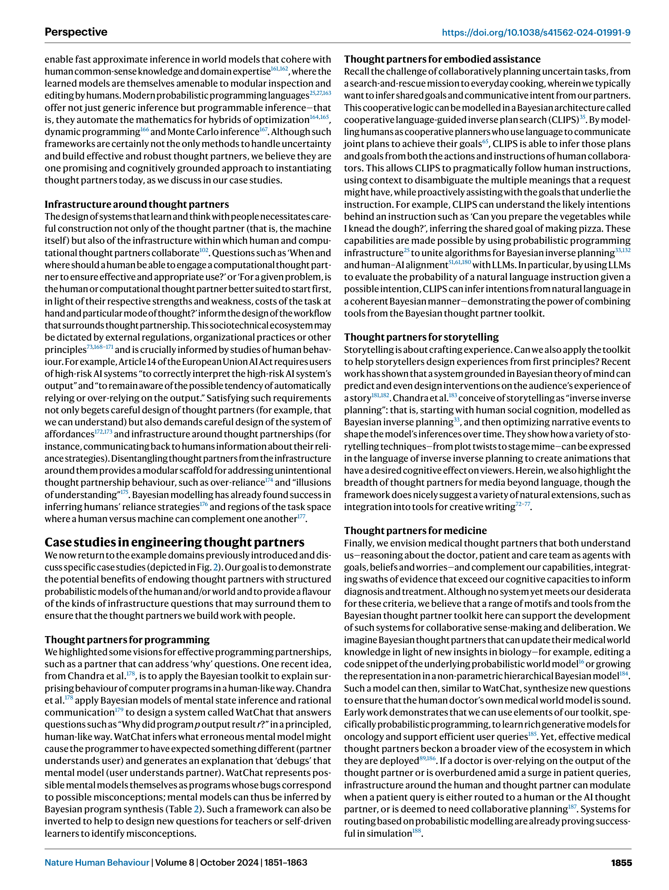

Figure 1
Figure 1
AI를 단순한 "사고의 도구(tools for thought)"가 아닌 "사고의 파트너(thought partners)"로 설계해야 한다는 비전을 제시하는 Perspective 논문이다. 효과적인 사고 파트너의 세 가지 요건으로 (1) 나를 이해하는 시스템 (사용자의 목표, 신념, 자원 제약 모델링), (2) 내가 이해할 수 있는 시스템 (해석 가능하고 예측 가능한 행동), (3) 세계를 함께 이해하는 시스템 (공유된 세계 표현에 기반한 협력)을 제안한다. 이를 달성하기 위해 계산 인지과학(computational cognitive science)의 핵심 모티프들 -- 베이지안 추론, 마음 이론(Theory of Mind), 자원 합리성(resource rationality), 확률적 프로그래밍 -- 을 활용한 대안적 스케일링 경로를 주장한다.

Figure 2
현재 AI 시스템, 특히 LLM은 인간 행동을 표면적으로 모방(유창한 텍스트 생성 등)하지만, 세계나 타인의 마음에 대한 명시적 추론을 수행하지 못한다. 컴퓨터가 Steve Jobs의 "마음의 자전거"에서 이제 "코파일럿"으로 진화하고 있지만, 진정한 사고 파트너가 되려면 사용자의 의도, 지식, 제약을 이해하고 적응할 수 있어야 한다. 웹 스케일 데이터로의 스케일링만으로는 이러한 협력적 인지(collaborative cognition) 역량이 견고하게 창발하지 않으며, 명시적으로 설계되어야 한다.
저자들은 계산 인지과학의 수십 년간의 연구를 공학적 설계 원칙으로 번역한다.
Gen, Pyro, Church 등 현대 확률적 프로그래밍 언어(PPL)가 최적화, 동적 프로그래밍, 몬테카를로 추론의 하이브리드를 자동화하여, LLM이 인코딩한 풍부한 사전 확률과 결합 가능
사고 파트너 자체뿐 아니라 사용 인프라도 중요: 언제/어디서 AI를 개입시킬지, 과의존 방지를 위한 인지적 강제 기능(cognitive forcing functions), EU AI Act 준수를 위한 해석 가능성 등
인간-AI 협력의 미래에 대해 인지과학에 깊이 뿌리내린 체계적 비전을 제시하는 영향력 높은 Perspective 논문이다. "사고의 도구"에서 "사고의 파트너"로의 전환이라는 핵심 주장은 LLM 시대의 AI 설계 철학에 중요한 방향 제시를 한다. 특히 베이지안 마음 이론, 합리적 화행, 자원 합리성 등의 인지과학 모티프를 공학적 설계 원칙으로 구조화한 "Bayesian Thought Partner Toolkit"은 향후 인간 중심 AI 연구의 참조 프레임워크가 될 잠재력이 크다. 다만, 확률적 프로그래밍 기반 접근의 현실적 확장성은 향후 대규모 실증 연구를 통해 검증되어야 할 과제로 남는다.